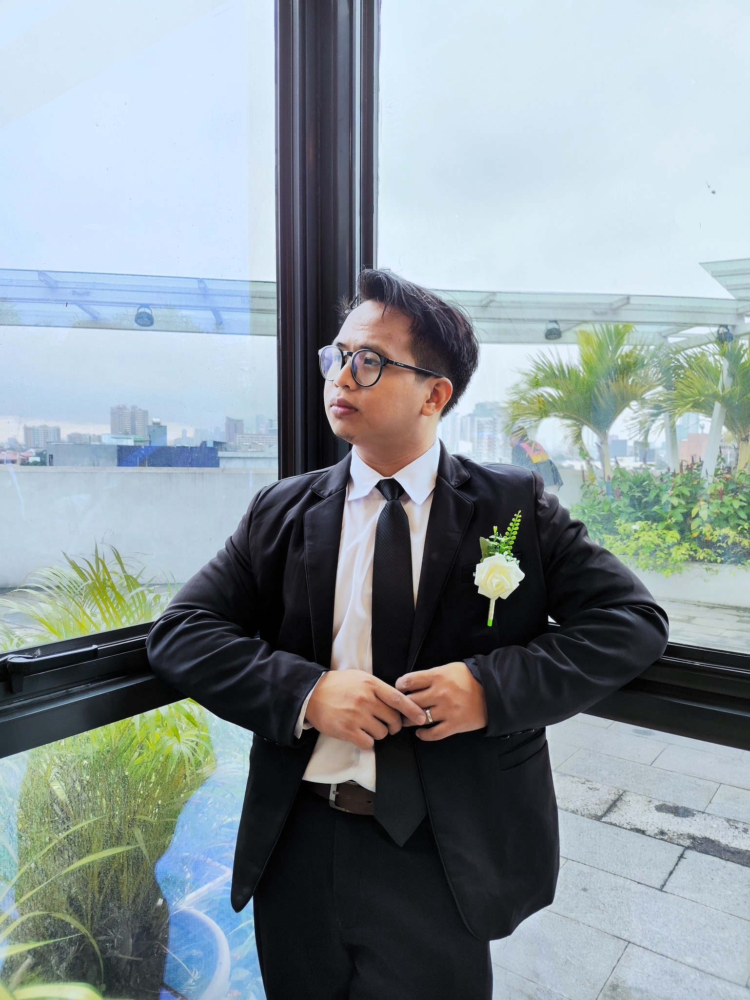
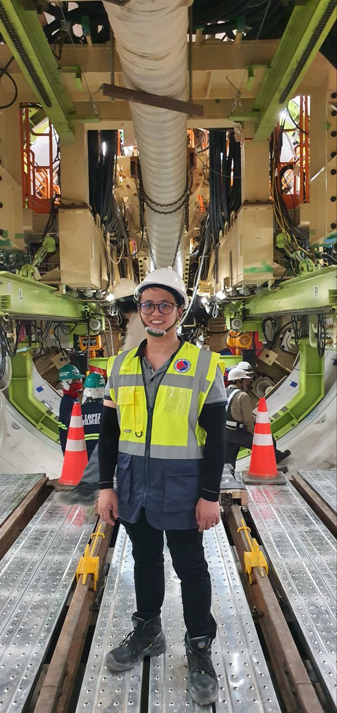
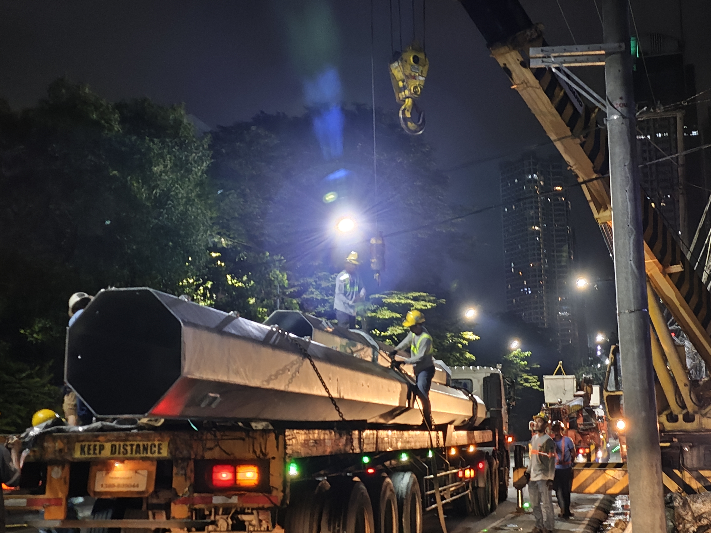
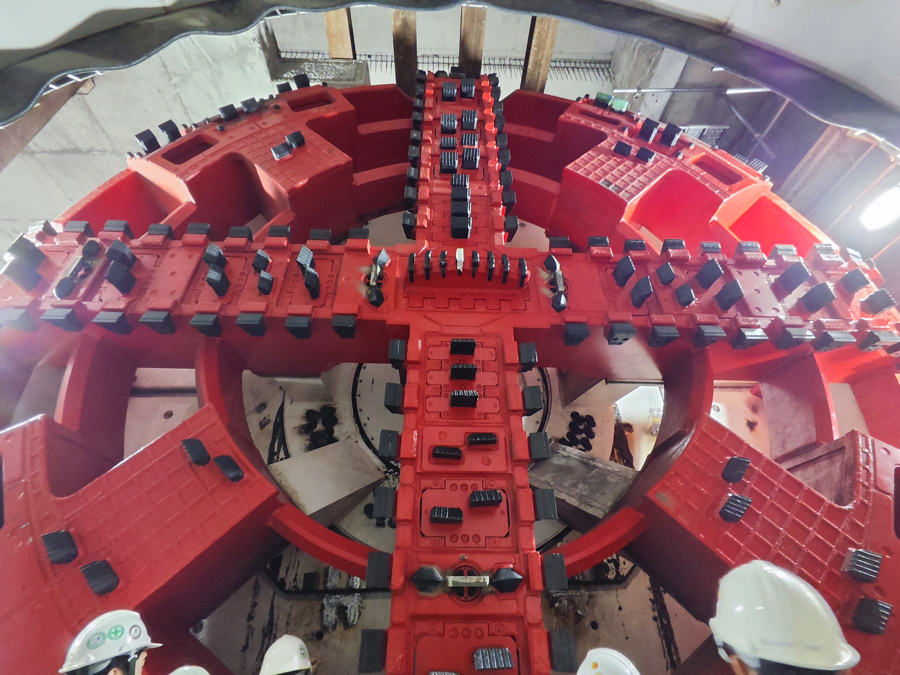
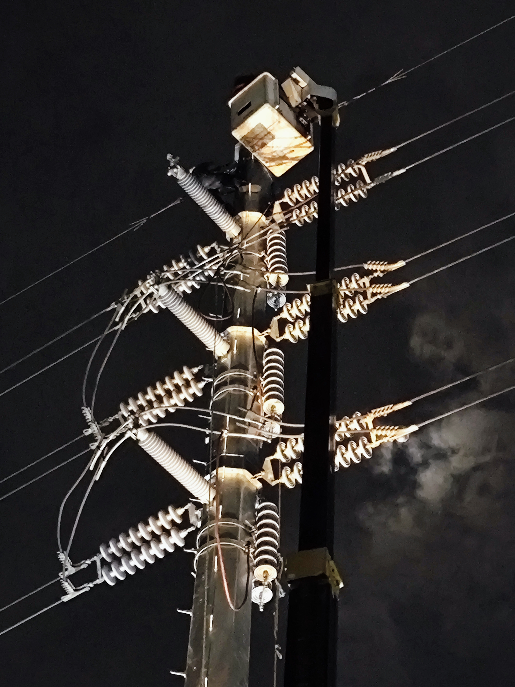

Hi, I'm Ram
Ramesses D. Modrigo
Mechanical Engineer | Metro Manila Subway Project | Estimator | Lean Six Sigma Yellow Belt


Mechanical Engineer | Metro Manila Subway Project | Estimator | Lean Six Sigma Yellow Belt

I am a Registered Mechanical Engineer with over seven years of experience across mechanical construction, cost estimation, regulatory assessment, and large-scale infrastructure. My background includes navigating complex international project environments, such as mechanical estimation for U.S. Army base facilities in Okinawa, Japan, and supervising high-rise construction for HVAC, plumbing, and fire protection systems.
These roles have solidified my expertise in quantity take-offs, cost analysis, and technical documentation, ensuring engineering precision from design to on-site coordination.
Currently, I serve as Engineer II for the Department of Transportation on the Metro Manila Subway Project. I manage critical utility relocation coordination, technical plan reviews, and stakeholder engagement to support the successful completion of relocation works across the MMSP alignment. My work ensures continuous civil works progress for this landmark infrastructure project.
Outside of my professional engineering responsibilities, I focus on leadership and personal development through these community and creative outlets:
I’m the point person for utility relocation on the Metro Manila Subway Project. My day-to-day is a mix of site inspections and stakeholder meetings, where I solve the "boots on the ground" problems that keep construction moving.






Utility Relocation
Cost Estimating
Quantity Take-Off
Construction Supervision
ISO 17065
AutoCAD Drafting
Advanced Excel
Tech Documentation
System Commissioning
Project Scheduling
Analytical Thinking
Attention to Detail
Team Collaboration
Communication
Time Management
Adaptability
Problem-Solving
Accountability
Microsoft Office
Click to expandEstimating Tools
Click to expandCAD & Design
Click to expandDesigning Tools
Click to expandWith hands-on expertise in Tier-1 Railway Infrastructure and international experience in JICA-funded environments, I am scaling my career toward Global Mega-Projects.
I am actively seeking to contribute to International Rail Networks and Strategic Cost Engineering teams where technical precision and cross-border regulatory expertise are paramount.
Quantity take-offs, bid analysis, and MEPFS cost forecasting for Mega-Infrastructure projects (USD 1B+).
Open to global opportunities in Subway, High-Speed Rail (HSR), and complex transit systems.
Managing complex utility relocations and multi-national stakeholder relations on a global scale.